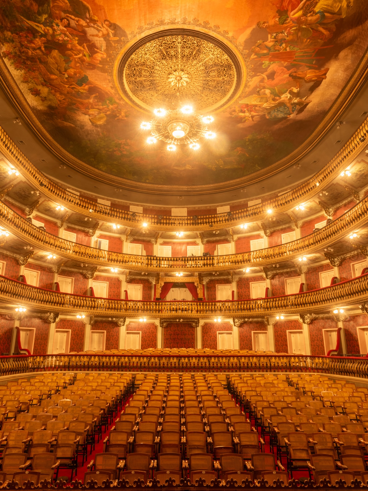
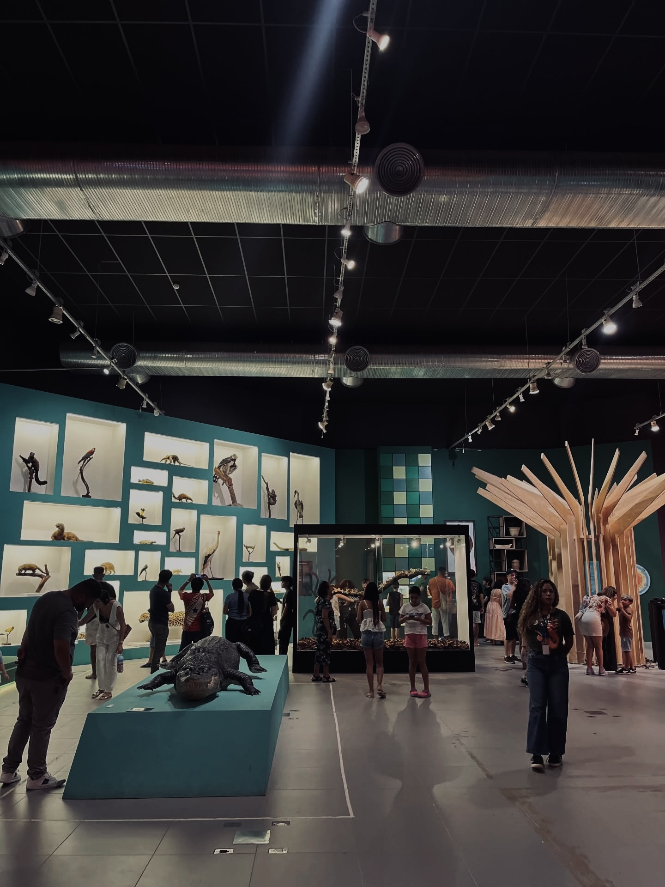
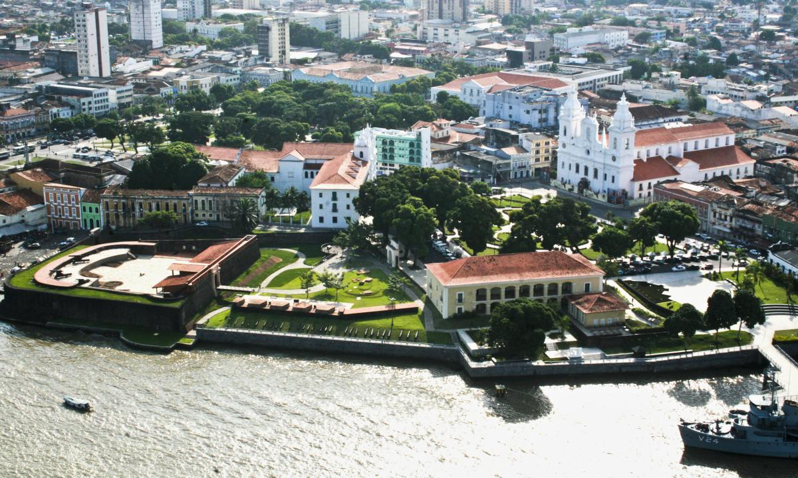
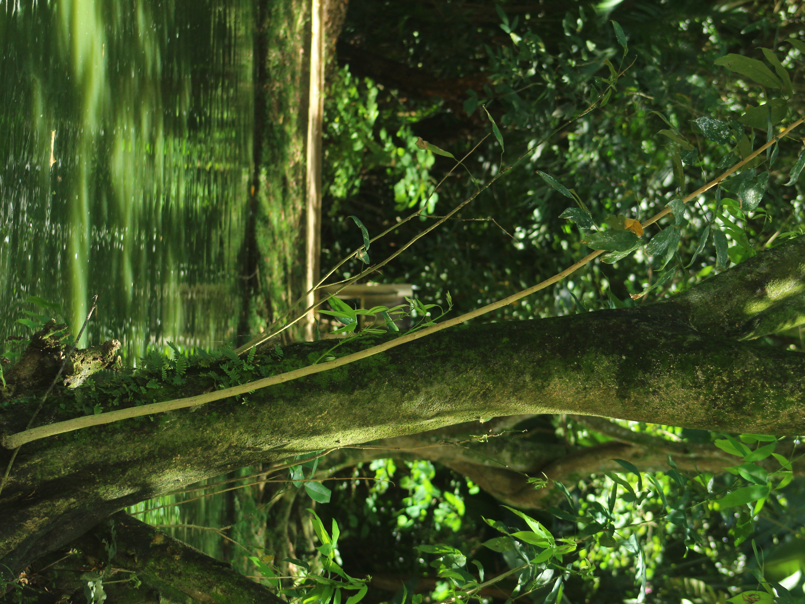
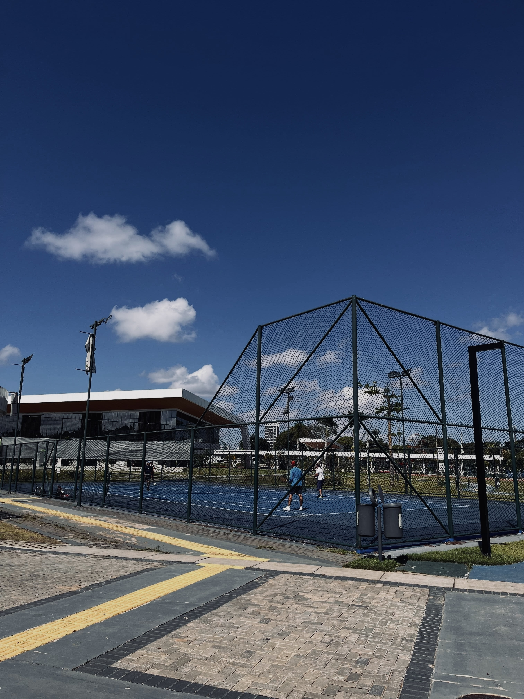
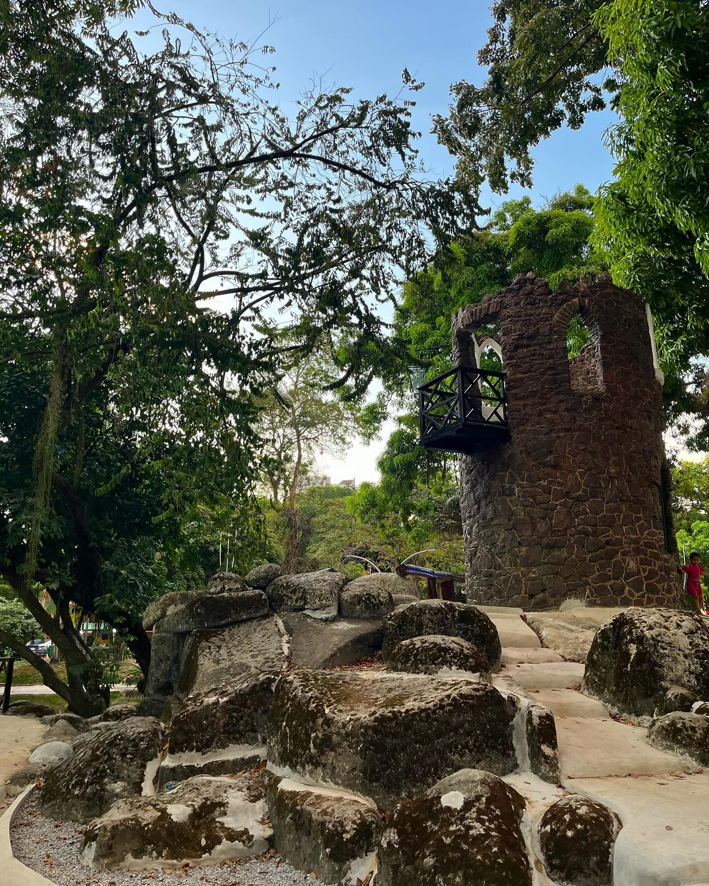
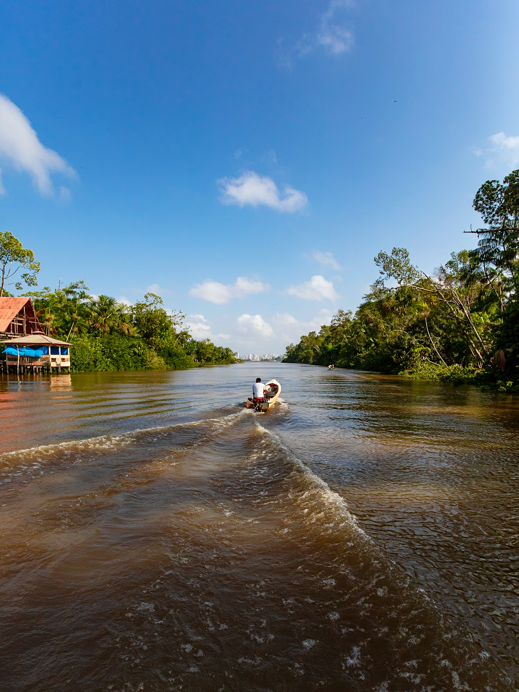

Principais atrações
Belém encanta pela combinação entre história, cultura, natureza e gastronomia. Explore alguns dos lugares mais visitados da capital paraense e descubra experiências únicas às margens da Baía do Guajará, em meio aos sabores, aromas e tradições da Amazônia.

Estação das Docas
Um dos cartões-postais mais famosos de Belém. O complexo reúne restaurantes, sorveterias, bares, lojas e uma vista privilegiada da Baía do Guajará.
Saiba mais
Ver-o-Peso
O mercado mais famoso da Amazônia reúne frutas, ervas, peixes, artesanato e ingredientes típicos da culinária paraense.
Saiba mais
Theatro da Paz
Construído durante o ciclo da borracha, é um dos teatros mais belos do país e símbolo da riqueza histórica de Belém.
Saiba mais
Museu Emílio Goeldi
Referência mundial em pesquisas sobre a Amazônia, o museu possui parque zoobotânico, exposições e coleções históricas.
Saiba mais
Feliz Lusitânia
Berço da cidade de Belém, reúne construções históricas, museus, igrejas e o Forte do Presépio em um único complexo.
Saiba mais
Mangal das Garças
Um parque ecológico com borboletário, viveiros, mirante, lagos e espécies da fauna e flora amazônicas em um ambiente tranquilo.
Saiba mais
Parque da Cidade
Um refúgio amazônico a poucos minutos de barco do centro de Belém, famoso pelos restaurantes, trilhas e produção de chocolate artesanal.
Saiba mais
Orla de Icoaraci
Famosa pela vista para a Baía do Guajará, brisa agradável e pelos quiosques da tradicional água de coco e da culinária paraense, além de ser o portal de acesso para a Ilha de Cotijuba.
Saiba mais
Praça Batista Campos
Famosa por seu paisagismo em estilo europeu, coretos históricos, pontes de ferro, lagos e árvores centenárias no coração da cidade.
Saiba mais
Parque do Utinga
Ideal para caminhadas, ciclismo, caiaque e contato com a natureza, preservando importantes mananciais da região.
Saiba mais
Ilha do Combu
Um refúgio amazônico a poucos minutos de barco do centro de Belém, famoso pelos restaurantes, trilhas e produção de chocolate artesanal.
Saiba mais